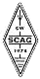

THE EUROPEAN CW ASSOCIATION
EUCW Straight Key Day
Results: June 2001

|  |
THE EUROPEAN CW ASSOCIATIONEUCW Straight Key DayResults: June 2001 |
|
Resultat SKD Midsommardagen 2001
Midsommardagens SKD bjöd, av antalet inkomna loggar att döma, på god aktivitet. Ca 200 olika anropssignaler har förekommit i de 40 loggar som kommit in från amatörer i SM, OZ, DL, LA, I, G, OK, UA och HL! Totalt loggades 523 QSO.
När mässingsdammet från handpumparna lagt sig och alla röster var sammanräknade (ingen omräkning á la amerikanskt presidentval kommer att genomföras) så stod den senaste tvåan SM1LF, Sören Strand, som segrare. Grattis Sören!
Några undrade var SM1TDE höll hus; jo, det var så att jag var på resande fot till Karlsborg för att delta i en FRO-kurs i telegrafi. Borde väl nästan anses vara en godtagbar ursäkt?
Innan uppräkningen av siffror börjar så bjuds det på några av deltagarnas kommentarer:
HL5AP: Served 10 years (1955-1965) KARL Director (Pub-relations) Plus, DX editor, QSL/Award Manager. Before KARL, SWL since 1943. Hold RSG´s DX/LCA Member of the international MORSE preservation Societ, England. #028. # X 7181. First class Amateur (2nd in Korea) ex: HM1AP Nov 1960. (HM1AP)
SM7FUE: Hög klass på alla telegrafister, någon fick jag fråga om om det verkligen var handpump och inte elbug eller dator han använde. Var tog alla halvbra vägen?
SM5AZS: Jag körde QRP m HW-8 2w dipole
SM7LZQ: Roligt att se så många icke-skandinaver är aktiva. Mondre roligt att Svenska SCAG verkar ha dött. Har försökt gå med efter många års uppehåll i medlemsskapet, men ingen respons!!!
DJ5AA: It was an enjoyable morning with handmade CW, sorry the Scandinavian OMs came so late […]
SM0AOM: Tog ut Collins-grejor av såväl modern som tidlös design (HF-2050+ KWM-2) i trädgården och körde SKD i det fina sommarvädret. Kul med hög aktivitet.
G4FAI: I would liked to work more Scandinavian stations, but I did not hear them! My key was an old British Post Office brass key, about 80 years old.
SM7VRJ: Lite synd att det blev fel tidsangivelse i QTC, det var urusel aktivitet 06:00 utc. COP påpekade för mig att SKD börjar inte förrån tio........enl QTC hade han ju rätt! Kl 10:00 svensk sommatid tycker jag är lite för sent att börja, 08:00 är lagom alltså 06:00 UTC. Annars framåt dagen var det skaplig aktivitet och som vanligt en trevlig begivenhet! TACK! (TDE: jag skrev fel, SRI.)
G4LHI: Look forward to many more events like this.
SM6VWG: Det var kul att köra handpump, det händer inte så ofta numera. HL5AP ropade in med SCAG SKD men jag hörde inte många som svarade honom.
SM7BVO: Tnx fer en trevlig spelmansstämma, även om condx inte var på bästa humör så svängde det härligt om pumparna.
SM1LF: Sista timmen fick jag bryta för LY2FE/Vitas bad om hjälp att få tag på en segelyacht i Södra Östersjön. Via Sthlm rdo och Klajpeda rdo:s tfc-lista kom dom till rätta i det för dagen mycket blåsiga Östersjön.
SM7XOO: Min första test, HI!
SM0NFA: Jag avger ingen röst alla jag haft QSO med har sänt med god och acceptabel handstil. Vi har väl skrämt bort dem som sänder lite sämre. Är inte aktiviteten det viktigaste? Skulle man inte få någon eloge för att man kört ett visst antal SKD? Eller?
SM5NDI: Svårt att "välja" vilka som skall ha en guldstjärna i marginalen, när det är många bra operatörer!
M0CMQ: Although nearly 69 years of age I am new to amateur radio. Unfortunately my antenna situation at my QTH here in London is restricted – just not enough room in a suburban bulit-up area, sp that SSB is not good for transmitting. So I am pleased when I can find CW events to improve my working experience of the morse code on the amateur bands. SKD helps!
SM5APS: Devicen på mitt QSL håller: "CW" THE NOBLE ART OF COMMUNICATION! Saknade SM1TDE i midsommar SKD, somnade du under någon enbuske? (TDE: sånt börjar jag bli för gammal för, hi. Se ovan!)
UA6JD: Type of key: very small "spy type" straight key from WW2
Och nu: sifferexercis!
Antal QSO/logg
HL5AP: 16
SM7FUE: 12
SM5AZS: 3
DL1DQY: 9
LA5DF: 15
DL1GGM/M: 19
SM4ANQ: 8
SM7LZQ: 9
G3IUC: 5
SM5AIY: 14
DJ5AA: 19
SM7NDX: 4
SM0AOM: 27
G4FAI: 6
LA8XD: 2
LA5FH: 20
SM7VRJ: 19
DL1LAW: 12
SM4SZT: 5
G4LHI: 8
DL1AH: 10
UA6JD: 17
SM6VWG: 21
SM7BVO: 15
SM7OIC: 9
SM1LF: 26
DL5DWL: 9
SM7XOO: 5
SM0NFA: 14
SM5NDI: 13
IK2RMZ: 19
SM6YF: 26
SM3IIG: 6
M0CMQ: 5
OK1FVD: 15
OZ1CAR: 33
SM4CJY: 4
G3ZHE: 22
SM5APS: 15
SM7DQW: 7
Utfallet avröstningen blev som följer:
8 röster och segrare:
SM1LF
7 röster:
OZ1CAR, LA5FH, SM6YF, SM5COP
6 röster:
SM0AOM, IK2RMZ
4 röster:
DL9ABM
3 röster:
SM7BVO, SM6VWG, SM0KRN, SM7VRJ, SM5APS
2 röster:
OK1FVD, LA5DF, SM7LZQ, G4FAI
1 röst:
UA1TET, I3DBD, OM8CH, SM7BNG, DK9PS, OH2TV, G4OLF, SM6HDY, SM7DQW, DL1DQY, UA6JD, HB9DEO, I2UNF, SM6CLU, SM5CBC, SM6LKM, LA8XD, SM4SZT, G3ZHE, SM7NDX, SM7FUE, OK1MXM, SM5AIY, DM5ZIG, SM7TTO, SM7DQO, GM4FIB, G0CHV, SM5AZS, SM5NDI, SM7XOO
Hedersomnämnande:
HL5AP
Minst 3 röster = utmärkelse att se fram emot!
QRU.
73 de Eric; SM1TDE
Source: Original file from SM1TDE